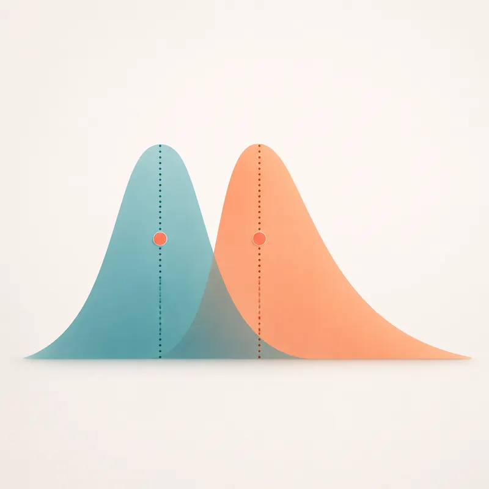

Unidad 5 · Estadistica descriptiva aplicada a salud
Tabla 1
library(gtsummary)
salud |>
select(edad, sexo, imc, glucosa_mg_dl, diagnostico) |>
tbl_summary(by = diagnostico)Media o mediana

salud |>
summarise(
media = mean(glucosa_mg_dl, na.rm = TRUE),
mediana = median(glucosa_mg_dl, na.rm = TRUE),
q1 = quantile(glucosa_mg_dl, 0.25, na.rm = TRUE),
q3 = quantile(glucosa_mg_dl, 0.75, na.rm = TRUE)
)